1.0.1 准备上架 · iOS / iPadOS 17.0+
1.0.1 准备上架 · iOS / iPadOS 17.0+ 发财了
每天一点底气，
靠近理想生活。
收下一句鼓励，让小金芽陪你慢慢成长。120句发财话、9款离线声音，搭配愿望清单、心情日记和分享海报，把想要的生活拆成今天的一小步。
无需账号，没有广告或内购。内置文案可离线朗读；自定义宣言可导入音频或自行录音。个人 iCloud 默认关闭，可按类别选择自己的同步内容。
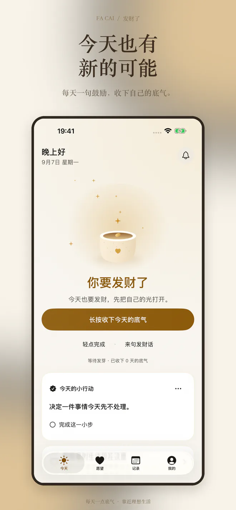
每天一个小仪式
长按或轻点收下今天的底气。小金芽随累计仪式天数成长，错过几天也不会枯萎。
愿望慢慢实现
为理想生活写下愿望、选一张封面、拆成小步骤。可以置顶、归档，也能完成后重新调整。
留住真实的小进展
用心情、日记和小行动记录日常，在日历和统计里看见自己的努力。
把鼓励，
读给你听。
120句内置文案均已合成，共1,080段离线音频。在设置中逐一试听，找到喜欢的声音，也能调整播放速度。
- 晓晓 · 晓伊温暖亲切的女声，或明亮轻快的女声。
- 云希 · 云扬清朗阳光的男声，或沉稳清晰的男声。
- 甜甜 · 暖阳明亮甜美的女声，与温柔陪伴的男声。
- 软甜 · 轻熟 · 俏皮柔软亲近的女声、温柔轻熟的男声，以及轻快俏皮的男声。
刚好的温柔提醒
三个独立提醒时段、星期选择与静默时段，让鼓励出现在你愿意接收的时候。
主题、小组件与海报
六套主题支持深浅外观。桌面和锁屏小组件陪你看见鼓励，喜欢的话可以生成海报。
分享与真实评价
在“我的”或“设置”分享 App、前往 App Store 评价。评分提醒设有频率限制，可随时关闭。
把期待放进愿景板
调整照片构图，把喜欢的愿望拼在一起，收藏向往的生活。
看见过去，也写给未来
用成长周报和那年今日回看自己，给未来的自己留一封信、一段声音。
累的时候，慢一点
低能量陪伴提供轻量小行动。无需赶进度，也能照顾此刻的自己。
自己的声音，离线陪伴
导入音频或自行录音，绑定宣言后随时播放，把鼓励说给自己听。
个人 iCloud 与隐私锁
选择内容在自己的设备间同步、备份与恢复，用系统验证保护应用里的私人记录。
小组件自动换一句
选择语句来源和轮换频率，让常看的位置带来新的鼓励。实际刷新由系统调度。
iPhone 展示图
6.5英寸展示图。保留原有展示设计；本次新增页面实机截图另见升级验证资料。横向滑动查看，点击可单独打开。
{kind=link}
{kind=link}
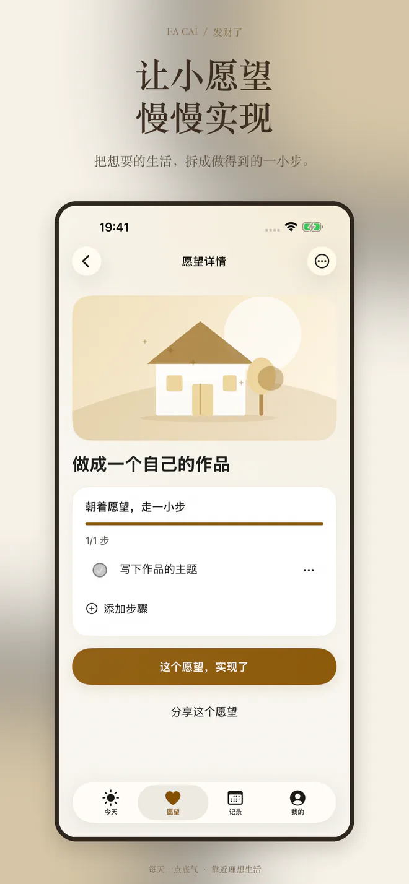
{kind=link}
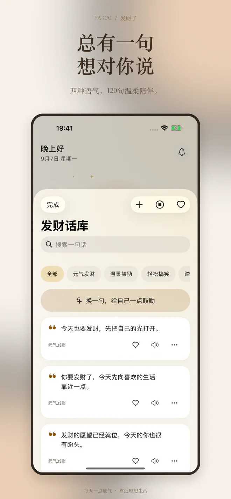
{kind=link}
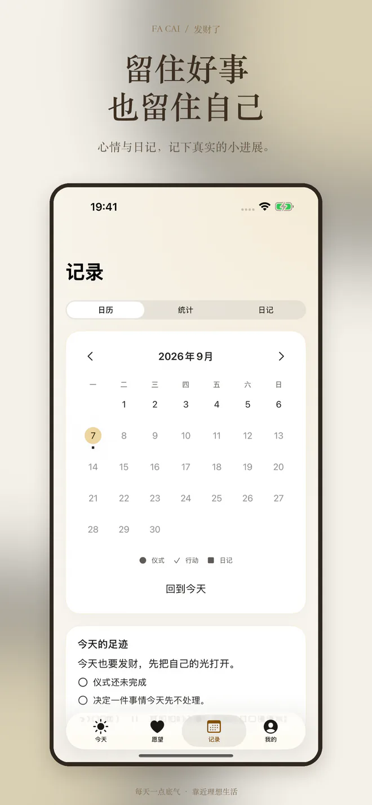
{kind=link}
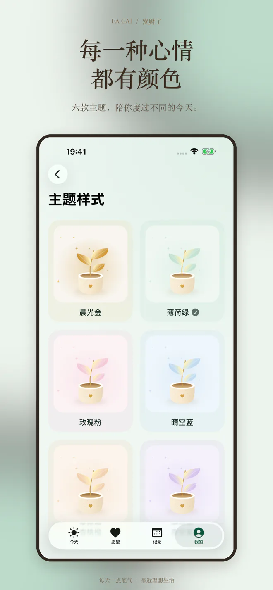
{kind=link}
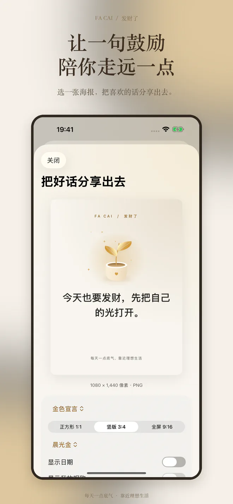
iPad 展示图
13英寸iPad展示图，保留原有展示设计；升级版页面以最新应用为准。
{kind=link}
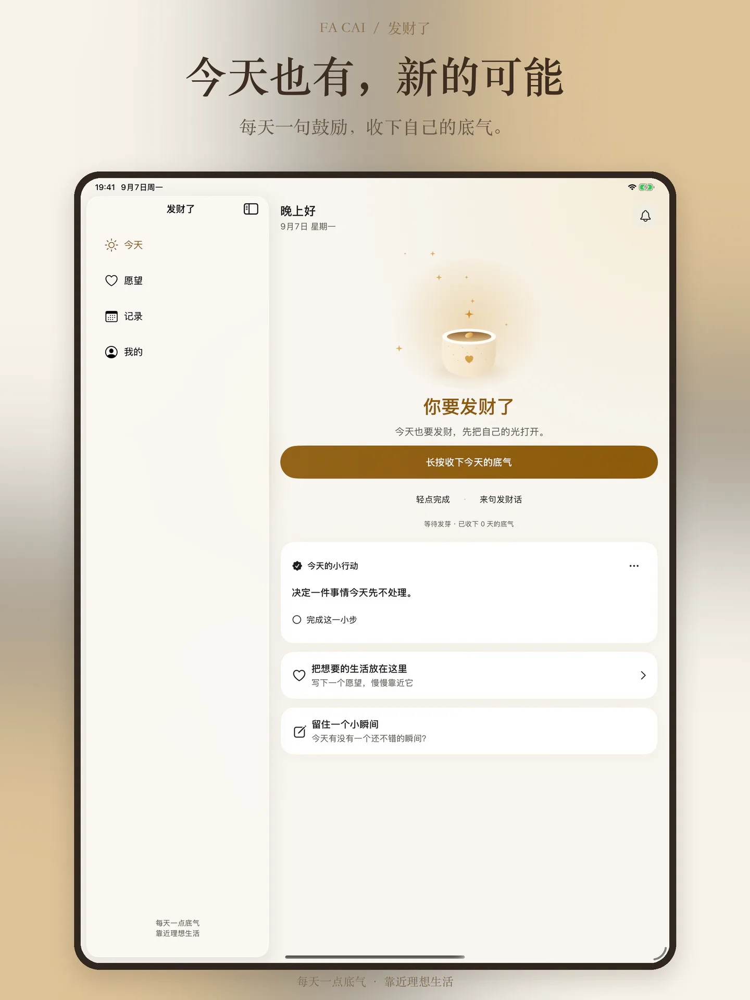
{kind=link}
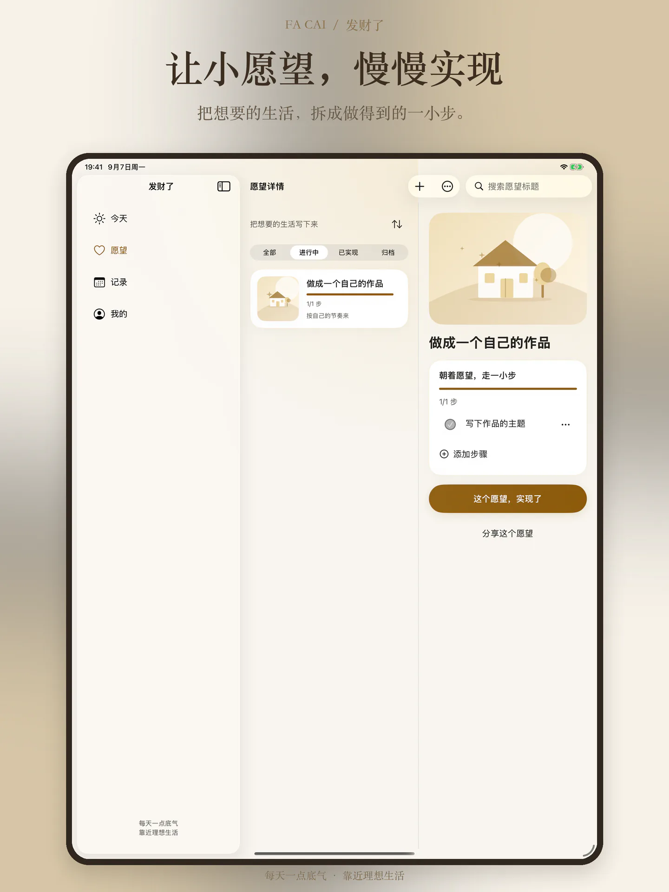
{kind=link}
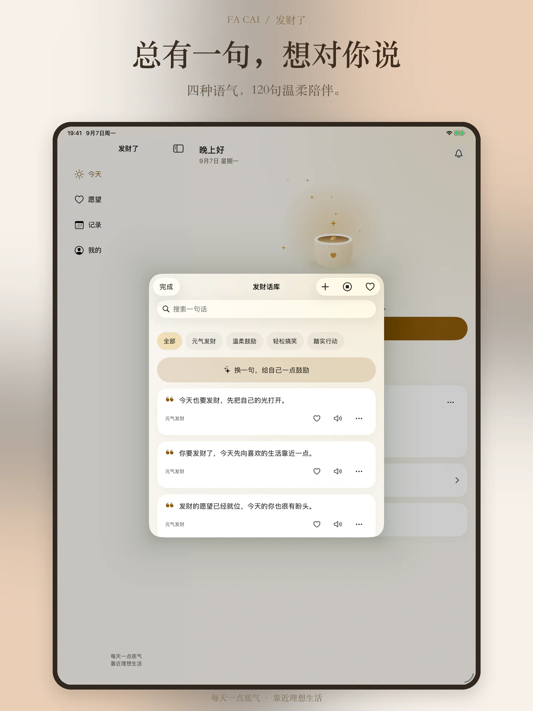
{kind=link}
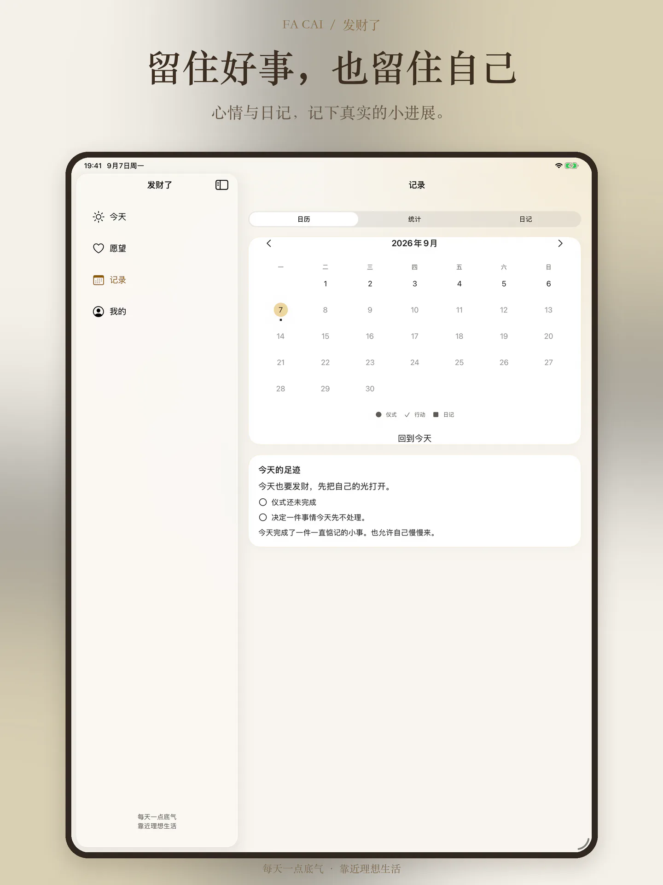
{kind=link}
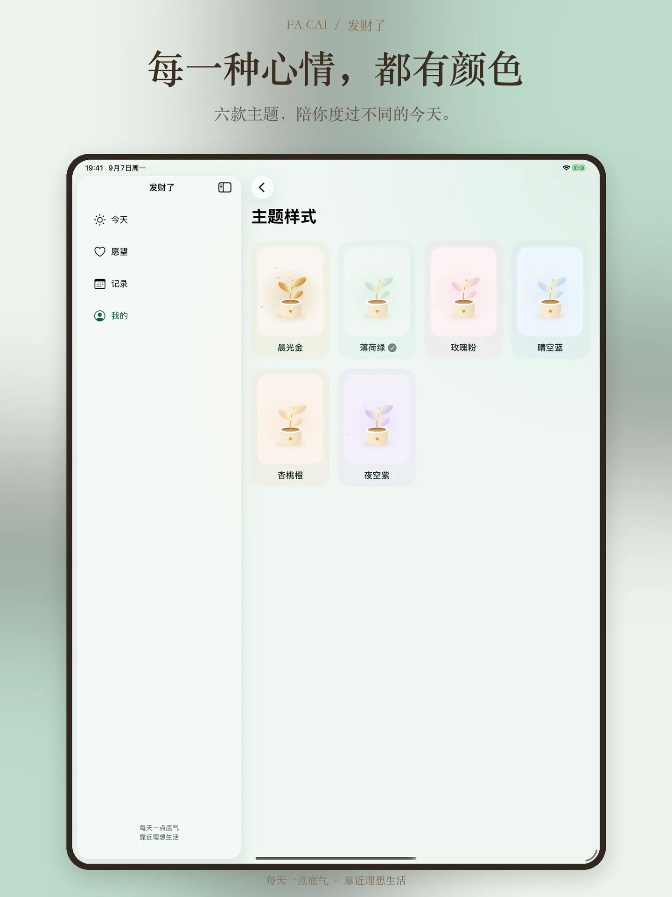
{kind=link}
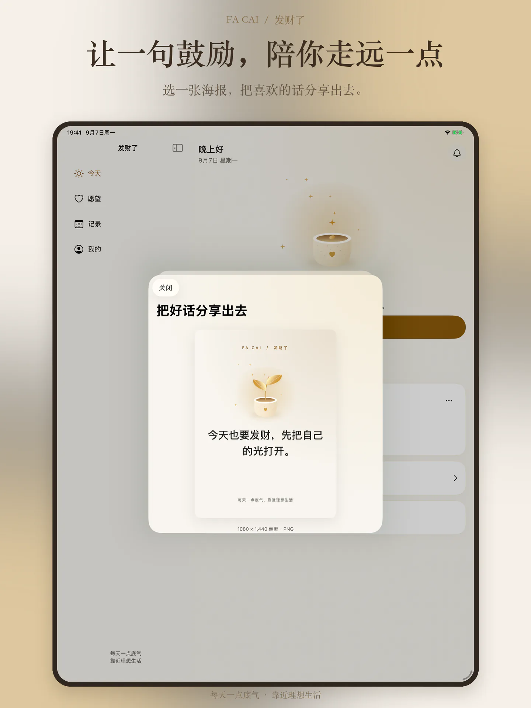
先从今天，对自己多一点期待。
发财是一份美好期待，这里记录的是心意和行动，不承诺收入或运气改变。